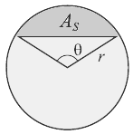
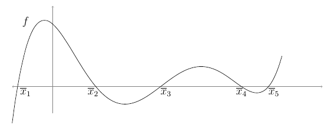

2.1 Localização de raízes#
Em ciências e engenharias frequentemente a solução de um problema real é obtida resolvendo uma equação em uma variável real, a qual sempre pode ser escrita na forma $\(f(x)=0\)$
Dada uma função \(f:R \rightarrow R\) dizemos que \(\overline{x} \in R\), tal que \(f(\overline{x})=0\) é um zero (ou raiz) da função \(f\). Graficamente, uma raíz é o ponto onde a função \(f(x)\) cruza ou toca o eixo \(x\). Uma equação \(f(x)=0\) pode não ter solução (raiz real), ter uma única raiz ou várias.

Quando a equação é simples, o valor de \(x\) pode ser determinado analiticamente. Esse é o caso quando se escreve \(x\) explicitamente após a aplicação de operações matemáticas, ou quando uma fórmula conhecida (como a fórmula de Bháskara para resolução de equações quadráticas) pode ser usada para determinar o valor exato de \(x\). Em muitas situações, no entanto, é impossível determinar analiticamente a raiz de uma equação.
Por exemplo, é relativamente fácil obter analiticamente as raízes das equações
a) \(2.1x-47.3 = 0\)
b) \(x^2+2x-3 = 0\)
c) \(senx-x = 0\)
Já para as equações a seguir é preferível utilizar-se de métodos numéricos
a) \(xe^x-2 = 0\)
b) \(cos3\theta-sen\theta =0\)
c) \(2.1^x+5.7x=0\)
Exemplo 2.1.1: Em termodinâmica, sob determinadas condições, a relação entre o calor \(Q\) fornecido a um gás e sua variação de temperatura \(T_f - T_i\) é dada por
Para o gás metano tem-se \(R=8,314 J/mol.K\), \(A=1,702\), \(B=9,081 \times 10^{-3}K^{-1}\), \(C=-2,164 \times 10^{-6} K^{-2}\).
Considere o problema de calcular a temperatura final \(T_f\) se \(20 kJ\) de energia que é absorvido pelo gás, supondo estar contido em uma uma câmara com \(n=2 mol\) de metano a temperatura \(T_i = 300 K\).
Exemplo 2.1.2: A área do segmento \(A_S\) de um círculo de raio \(r\) (ver figura abaixo) é dada por \(A_S=\frac{1}{2}r^2(\theta-sen\theta).\)
Para se determinar o ângulo \(\theta\) se \(A_S\) e \(r\) são conhecidos, a equação deve ser resolvida para \(\theta\). Obviamente, não é possível escrever \(\theta\) explicitamente em termos de \(A_S\) e \(r\), portanto, a equação não pode ser resolvida analiticamente.
Exemplo 2.1.3: Seja uma esfera de madeira de raio \(r\) colocada a flutuar sobre a água conforme figura. Qual é a altura \(d\) da esfera que ficará submersa?
![esfera.png]()
Para responder essa pergunta, observemos que, pelo Princípio de Arquimedes o peso da esfera deve ser equilibrado com o peso do volume de água deslocada, ou seja, \(\mu_e V_e g = \mu_a V_a g\) onde \(g\) é a aceleração da gravidade, \(\mu_e\) é a densidade relativa da madeira e \(\mu_a\) é a densidade relativa da água, \(V_e\) e \(V_a\) são os volumes. Essa equação nos leva a
substituindo os valores: \(r=10 cm\) \(\mu_e =0,638 g/cm^3\) e \(\mu_a=1 g/cm^3\) obtemos
Basta resolver essa equação para obter a resposta procurada. Embora a solução analítica para esse problema possa ser encontrada, não é tão simples. No entanto, com uma rotina num simples podemos encontrar uma boa aproximação numericamente.
Exemplo 2.1.4: Podemos utilizar uma abordagem numérica para obter soluções aproximadas de equações, vejamos por exemplo a equação \(f(d) = 1.047d^3-31.415d^2+2672.369\) do exemplo descrito anteriormente. Dos dados do problema, podemos inferir que a solução é um número entre 0 e 20, então, calculamos valores da função nesse intervalo e tentar encontrar uma aproximação. Buscamos o valor de \(d\) que anula a função \(f\), então, observando os resultados na tabera abaixo, podemos concluir que a solução é um número entre 11 e 12 cm pois é o intervalo onde a função muda de sinal.
for d in range(0,21):
y = 1.047*d**3-31.415*d**2+2672.369
print('f(',d,')=', round(y,3))
f( 0 )= 2672.369
f( 1 )= 2642.001
f( 2 )= 2555.085
f( 3 )= 2417.903
f( 4 )= 2236.737
f( 5 )= 2017.869
f( 6 )= 1767.581
f( 7 )= 1492.155
f( 8 )= 1197.873
f( 9 )= 891.017
f( 10 )= 577.869
f( 11 )= 264.711
f( 12 )= -42.175
f( 13 )= -336.507
f( 14 )= -612.003
f( 15 )= -862.381
f( 16 )= -1081.359
f( 17 )= -1262.655
f( 18 )= -1399.987
f( 19 )= -1487.073
f( 20 )= -1517.631
Seguindo o mesmo procedimento mas agora incrementando o valor de \(d\) em 0.1 e calculando \(f\) para valores de \(d\) entre 11 e 12 observamos que a solução está entre \(11.8\) e \(11.9\).
for inc in range(0,11):
d = 11+inc/10
y = 1.047*d**3-31.415*d**2+2672.369
print('f(',d,')=', round(y,3))
f( 11.0 )= 264.711
f( 11.1 )= 233.637
f( 11.2 )= 202.631
f( 11.3 )= 171.701
f( 11.4 )= 140.852
f( 11.5 )= 110.091
f( 11.6 )= 79.425
f( 11.7 )= 48.858
f( 11.8 )= 18.399
f( 11.9 )= -11.948
f( 12.0 )= -42.175
Por fim, podemos tomar como solução aproximada o ponto médio entre \(11.8\) e \(11.9\), ou seja, \(d=11.85\). A precisão é de \(0.05\).
Exemplo 2.1.5: (Usando a biblioteca SciPy)
Encontrando a raiz de \(A_S=\frac{1}{2}r^2(\theta-sen\theta)\) com \(r=1\) e \(A_s = 3.5\).
from scipy.optimize import fsolve
import numpy as np
As = lambda x: 0.5*(x-np.sin(x))-3.5
sol = fsolve(As, 1)
print (sol)
[7.99067236]
Esses foram pequenos exemplos de como os métodos numéricos podem nos auxiliar a obter soluções aproximadas quando não é fácil ou possível obter soluções analíticas. Os métodos numéricos são utilizados para muitas outras situações, como resolver integrais definidas, sistemas lineares de grande porte, equações diferenciais, obter visualização de grandes conjuntos de dados, etc.
Localização de Raízes#
Como foi possível perceber, muitos problemas em ciências e engenharia envolvem a resolução de uma equação que pode ser colocada na forma
Em alguns casos a solução exata \(\overline{x}\) pode ser encontrada por processos analíticos, quando isso não for possível, uma solução aproximada pode ser obtida por métodos numéricos. Em geral, esses métodos fornecem uma sequência de aproximações, obtidas por um processo iterativo que termina quando a precisão desejada é atingida.
Graficamente as raízes da equação \(f(x)=0\) (ou zeros da função \(f\) correspondem aos pontos onde o gráfico de \(f\) intercepta o eixo \(x\). Na figura abaixo, a função \(f\) possui 5 zeros representados por \(\overline{x}_1\), \(\overline{x}_2\), \(\overline{x}_3\), \(\overline{x}_4\) e \(\overline{x}_5\).

Encontrar numericamente a raiz de uma equação requer duas etapas:
Isolar a raiz, ou seja, encontrar um intervalo \([a,b]\) contendo uma única raíz da equação \(f(x)=0\) e;
Refinar o intervalo que contém a raíz até atingir a precisão desejada.
Para isolar os zeros de uma função, podemos utilizar métodos gráficos ou testar valores numericamente. Um dos métodos gráficos consiste em rescrever a equação \(f(x)=0\) numa forma equivamente \(f_1(x)=f_2(x)\) e traçar os gráficos de \(f_1\) e \(f_2\) para verificar onde eles se interceptam. Outra abordagem seria atribuir valores arbitrários para a variável \(x\) e encontrar um par \(a\) e \(b\) tal que \(f(a)\cdot f(b)<0\).
Exemplo 2.1.6:
A equação \(f(x)=e^x-sen(x)-2=0\) pode ser escrita como \(e^x=senx+2\) então, esboçando os gráficos de \(f_1(x)=e^x\) e \(f_2(x)=senx+2\), observamos que
a raiz procurada está entre \(0.5\) e \(1.5\), como pode ser visto na figura abaixo

Também podemos fazer gráficos usando Python. Para isso precisamos da seguinte biblioteca:
import matplotlib.pyplot as plt
A partir daí criamos uma lista de pontos para plotar, fica fácil fazer isso usando a função arange da biblioteca numpy:
import numpy as np
x = np.arange(-1, 6, 0.25) # início, fim, passo
print (x)
[-1. -0.75 -0.5 -0.25 0. 0.25 0.5 0.75 1. 1.25 1.5 1.75
2. 2.25 2.5 2.75 3. 3.25 3.5 3.75 4. 4.25 4.5 4.75
5. 5.25 5.5 5.75]
Agora definimos as funções para obter os valores de \(f1(x)\) e \(f2(x)\). Isso pode ser feito usando a função lambda ou def.
f1 = lambda x: np.exp(x)
f2 = lambda x: np.sin(x)+2
Agora, basta plotar:
plt.figure(figsize=(5,3))
plt.plot(x, f1(x), x, f2(x))
plt.ylim(0, 4)
plt.grid()
plt.show()

Exemplo 2.1.7: Atribuindo valores para \(x\) e avaliando a função \(f(x)=e^x-sen(x)-2\) para esses valores obtemos:
f(0.0) = -1.0000
f(0.5) = -0.8307
f(1.0) = -0.1232
f(1.5) = 1.4842
f(2.0) = 4.4798
f(2.5) = 9.5840
Como \(f(1.0) \cdot f(1.5)<0\), podemos concluir que existe pelo menos uma raíz entre \(1.0\) e \(1.5\).
Ainda, considerando essa mesma função, podemos verificar a existência de uma única raíz no intervalo \([1.0, 1.5]\) plotando seu gráfico

Em Python, podemos plotar os gráficos de \(f_1(x)=e^x\) e \(f_2(x)=sen(x)+2\) usando o seguinte script:
x = np.arange(0.5, 1.5, 0.1)
f1 = lambda x: np.exp(x)
f2 = lambda x: np.sin(x)+2
plt.plot(x, f1(x), x, f2(x))
plt.grid()
plt.show()

Ou, então, plotar apenas o gráfico de \(f(x)=e^x - sen(x) -2\) usando o seguinte script:
x = np.arange(0.0, 2.0, 0.1)
f = lambda x: np.exp(x)-np.sin(x)-2
plt.plot(x, f(x))
plt.grid()
plt.show()

Exercícios:
1. Localize graficamente e determine uma aproximação para as raízes reais das funções dadas.
a) \(f(x) = –0.5x^2 + 2.5x + 4.5\)
b) \(f(x) = 5x^2 – 5x^2 + 6x -2\)
c) \(f(x) = –25 + 82x – 90x^2 + 44x^3 – 8x^4 + 0.7x^5\)
d) \(f(x) = – 12 – 21x + 18x^2 – 2.75x^3\)
2. Determine um intervalo pequeno (de tamanho 0.1, por exemplo) que contenha as raízes reais das funções dadas.
a) \(f(x)=x-e^x=0\)
b) \(f(x)=\operatorname{sen}(x)+x^2+1=0\)
c) \(f(x)=\operatorname{sen}(x)-x+2=0\)
d) \(f(x)=2 x-\operatorname{tg}(x)=0\)
e) \(f(x)=3 x-\cos (x)+1=0\)
f) \(f(x)=\ln (x)-\operatorname{sen}(x)=0\)